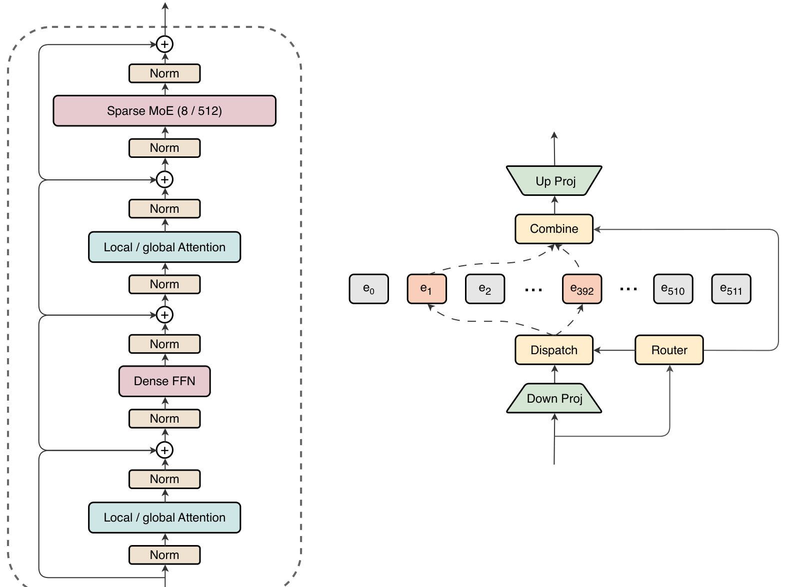
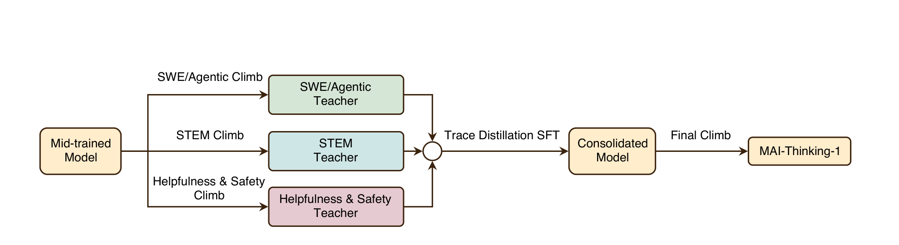
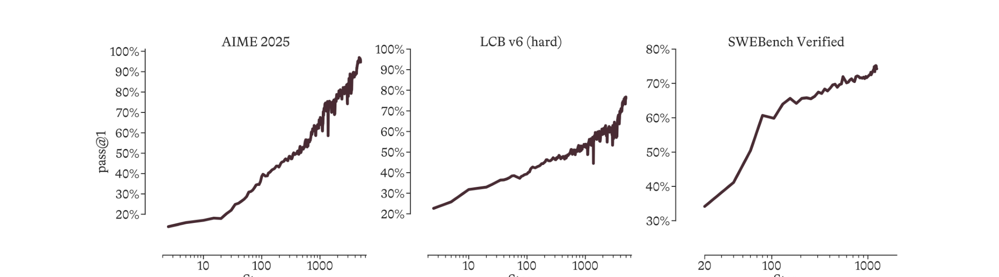

MAI-Thinking-1：把模型研发当成一台「爬山机」
MAI-Thinking-1: Building a Hill-Climbing Machine
①开源贡献 Open-source Artifacts
一句话：这是一份纯技术报告，没有任何开源。报告本身没有给出代码、权重或数据集的下载链接，正文也不含「we release / we open-source / available at」之类的发布声明。模型走的是闭源商业路线——据 Microsoft 官方页面，MAI-Thinking-1 目前在 Microsoft Foundry 私有预览（private preview，需申请），并可在 playground 试用；据 Build 2026 报道，后续还会上 Fireworks AI / Baseten / OpenRouter 等托管平台（Baseten 称将拿到权重以做优化与 fine-tune）。但这些都是托管 / API 形态，不是面向公众的 open weights。下表如实标注。
| 类型 | 是否开源 | 内容 / 说明 |
|---|---|---|
| 代码 Code | ✘ | 训练框架 YOLO、RL 框架 Rocket、SEE 沙箱、数据 pipeline 等均为 in-house，报告仅做文字描述，未放出代码。 |
| 模型权重 Weights | ✘ | 未公开发布。官方仅通过 Microsoft Foundry 私有预览 / playground 提供访问；据报道部分托管伙伴（如 Baseten）将获权重做优化与 fine-tune，但非公开 open weights。 |
| 数据集 Dataset | ✘ | 30T pre-training 语料与 STEM/SWE RL 数据全部 in-house，且「出于隐私、法律、安全与竞争原因」明确表示不披露数据集清单与供应商。 |
| 环境 / Benchmark | ✘ | 评测用的是公开 benchmark（AIME、LCB v6、SWE-Bench Pro/Verified 等，均为他人发布），但 MAI 自己的 NLL 评测套件、内部安全/越狱评测、SWE RL 环境均未开源。 |
| 项目主页 / Demo | ✘（仅预览） | 官方页 microsoft.ai/models/mai-thinking-1；playground playground.microsoft.ai/chat（私有预览 / 试用，非开源产物）。 |
注：以上「未开源」依据为报告原文 + microsoft.ai 官方页面（解读日核实）。企业旗舰模型不开放权重属常态，这里如实标 ✘。
②研究动机与贡献 Motivation & Contribution
背景与问题
报告开篇就抛出一个判断：AI 的进步不来自某一个模型，而来自持续改进当前模型的能力。换句话说，真正稀缺的不是「一次训出一个强模型」，而是「能让模型一轮一轮可靠变强的那套流程」。从这个视角看，他们把模型研发显式地当成一个系统级优化问题，而解法就是造一台「爬山机」。
这套框架要解决的痛点很具体：(1) 蒸馏的诱惑——从更强的第三方模型蒸馏 reasoning 能力上手快，但作者认为蒸来的智能缺乏长程爬坡所需的 steerability 与 robustness，且本质上是在「模仿别的 AI」而不是「从人类知识里学」；(2) RL 长程不稳定——要从一个完全没见过 reasoning trace 的 checkpoint 起步，跑数千步而不崩，训练稳定性是核心障碍；(3) 小规模实验未必外推——架构、数据混合的好处常随算力增大而消失甚至反转（rank 非不变性），让「小模型选型、大模型照搬」的做法失灵；(4) safety 与 helpfulness 的张力——既要拒绝该拒的，又不能过度拒绝（over-refusal）。
本文的切入点：三条设计原则
整篇报告由三条原则串起来：
- 能力靠学，不靠继承（capabilities should be learned, not inherited）——坚决不蒸馏第三方模型，pre-training 也不用任何 LM 生成的合成数据，并主动剔除采集语料里的 AI 生成内容。
- 简单才可持续（simplicity is sustainable）——偏好简单、可扩展的配方，干净可信的数据，透明的 infra；这些才撑得起「从零爬坡」。
- 科学严谨、不走捷径（scientific rigor avoids shortcuts）——每个决策都要能用「scaling 阶梯（ladder）+ ablation + evaluation」检验，找到可靠通往山顶的路径，而不是在某个固定规模上调出好看的数字。
核心贡献
- 提出并实践「hill-climbing machine」研发范式：把数据 pipeline、训练 infra、RL 环境与奖励、评测套件、安全测试整合成一个可经验迭代的优化回路，并产出第一个落地模型 MAI-Thinking-1。
- 一套以 scaling 为中心的 pre-training 方法论：scaling ladder（一族 L12→L78 的同形模型）+ efficiency gain（EG）这套可量化指标，用来在不同规模上检验架构/数据决策是否「随规模站得住」；并据此选出 35B active / 1T total、interleaved（高稀疏 MoE + dense FFN、local/global attention 交替）的架构。
- 一套能跑数千步 log-linear 爬坡的 RL 配方：在 GRPO 上做两处关键改动（adaptive entropy control + outer ratio clip），配合 self-distillation（崩了/换 base 时无损接力）与「消除训练-推理 numerics gap」的 infra，把 from-scratch RL 的稳定性问题压住。
- 「先专家、后合并」的能力整合路线：分别训 STEM、agentic coding/tool-use、helpfulness&safety 三个 specialist teacher，再用 trace distillation SFT 合成一个模型，最后一段轻量 RL 收尾得到 MAI-Thinking-1。
- 透明披露大量可借鉴的工程经验：dropless MoE、attention 零初始化治理 routing 不均衡、确定性（bitwise reproducible）训练、90% goodput 的容错、RL 里 bf16 双侧统一 + MoE routing replay + top-p mask replay 等。
③方法 Method
整体流程分两大块。第一块是 pre-training：把一个叫 MAI-Base-1 的 35B active / 1T total MoE base model 从零训出来（30T tokens 主 pre-training + 3.55T mid-training，最终 256K context），方法论核心是用 scaling ladder + efficiency gain 把每个架构 / 数据决策都放到「随规模能不能站住」这把尺子下检验。第二块是 RL climb：从一个完全没见过 reasoning trace 的 mid-trained checkpoint 起步，分领域训三个 specialist，再合并成单一模型（见下方 Figure 12 的流程）。下面分别展开。

Pre-training：用 scaling ladder + efficiency gain 做决策
架构上是 decoder-only Transformer 的几个稳健选择：RMSNorm（输入输出双侧、residual add 之前）、无 bias、输入输出 embedding tied、o200k_base tokenizer（约 200k 词表）。Attention 走 Gemma 3 式的周期性设计——每 5 层 local attention 配 1 层 global attention（local 用 RoPE + 512 滑窗，global 不用位置编码），GQA 8 个 KV head、每 head 128 维，对 q/k 都做 RMSNorm，从而能吃上 FlashAttention-4 与 Ulysses 式 context parallelism。FFN 上交替使用高稀疏 MoE 层与零稀疏 dense FFN——他们发现这种 interleaved 布局在 iso-active / iso-total 下与「每层都用中稀疏 MoE」效果相当，但 wall-clock 更省；并采用 LatentMoE（all-to-all dispatch 前先 2× 压缩），每 token 从 512 expert 里选 8 个，全程 dropless（不丢 token，变长 all-to-all）。
方法论的两个支柱：
- Scaling ladder：定义一族「形状一致、只由层数 $L$ 决定」的模型（L12 365M active → L78 35.6B active，见原文 Table 1），在固定的「每参数 token 数」（TPP）下训练并比较 scaling 曲线。架构 ablation 多在 Chinchilla 最优附近（100–200 TPP）做，而主跑刻意 over-train 到 500–1000 TPP，换一个更利于重推理负载的紧凑模型。
- Efficiency gain（EG）：先对 baseline 阶梯拟合 scaling law $$L=f(C)=A\,C^{-\alpha}+E$$ 其中 $C$ 是训练成本（FLOPs 或 wall-clock 时间），$A$ 控制可约损失的整体量级、$\alpha$ 控制损失随算力下降多快、$E$ 是不可约损失。对一个候选模型，若它以成本 $C'$ 达到损失 $L'$，则定义 $$\mathrm{EG}=\frac{f^{-1}(L')}{C'}$$ 直觉：EG=1.3 表示 baseline 要多花 30% 成本才能追平这个候选。用 FLOPs 定义 $C$ 时（记 EG_FLOPs）刻意忽略实现层面的 MFU，只比「同等优化投入下架构本身谁更强」；关心硬件效率时则用时间定义（EG_Time）。例如「每层 MoE+共享 expert」EG_FLOPs 能到 1.03，但 EG_Time < 1，所以 interleaved 布局综合更优。
数据是这一块最被强调的部分：30T tokens 全部 in-house 从 web HTML/PDF、书籍期刊、public GitHub 处理而来，不用任何开源训练集、不用 LM 合成数据，并从训练集里剔除 huggingface.co 等镜像、做 20-gram 模糊去重（阈 80%）来 decontaminate 公开 benchmark。去重做得很重——boilerplate、exact、MinHash 模糊、模板页 skeletonize、用 Qwen3-Embedding-0.6B 做语义去重，外加跨数据集的全局 drop-order 去重。开发期评测刻意用 NLL（而非选择题/生成式）：它和 pre-training 目标同构、跑得快、对格式/小扰动更鲁棒，便于在每个实验上一致测量。最终 mixture 里 code 占 54.6%、STEM 15.8%、math 5.4%（math 平均采样 5.28× 最多），web/PDF 平均不到 1×。
② attention 零初始化：随机初始化时 attention 近似在做「因果均值池化」，让 token 表示坍缩、并导致后续 MoE routing 严重不均衡（越深越糟）。把 attention 输出初始化为零（output RMSNorm gain 置零），让模型初期像逐 token 的 FFN 堆叠、跨 token 交互随训练渐入，显著降低初始不均衡并带来 EG 收益。
③ 训练配方：AdamW（$\beta_1{=}0.95,\beta_2{=}0.925$）、weight decay 0.1（attention 0.01、embedding 0.005）、grad clip 1.0；LR 从 $2\times10^{-4}$ cosine 衰到 $2\times10^{-5}$（final/peak=0.1× 而非常见的 0.01×，因为衰得少更利于 post-RL）；0.15 的高 dropout 做互补正则；global batch 134M tokens；BF16 + FP8（前向 GEMM E4M3、data-grad E5M2，weight-grad BF16 + FP32 累加），数值敏感处（pre-softmax、residual stream、embedding/router/norm 权重等）用 FP32。
④ infra（YOLO）：自研 PyTorch 之上的训练框架，强调 bitwise 确定性（关 NVLink SHARP、固定 reduction 顺序、稳定 sort 的 top-k）、分布式异步 checkpoint（CPU 内存与存盘时间 10×↓）、Ray hot-standby 快恢复；8K GB200 上 pre-training goodput 90.0%。架构-infra 经五代（v1–v5）协同演进，每改一次架构都引入新瓶颈再优化，最终 MFU 稳在约 20%。
RL climb：先专家、后合并，靠稳定性配方爬数千步

RL 起点是一个从没见过 reasoning trace 的 mid-trained checkpoint，模型要从零长出 CoT 能力，所以稳定性是头等大事。报告把这归到三个机制：(i) 对 GRPO 的两处改动；(ii) self-distillation；(iii) 消除训练/推理 numerics gap 的 infra。
目标函数。沿用 GRPO + token-level policy gradient：对 prompt $q$ 采样一组 $G$ 个 response，每个拿到标量 reward $R_i=R(q,y_i)$，response 级 advantage $A_i=(R_i-\mathrm{mean}(R_{1:G}))/\mathrm{std}(R_{1:G})$ 在该 response 所有 token 上共享，重要性比 $r_{i,t}(\theta)=\pi_\theta(y_{i,t}\mid q,y_{i, Reward 分解：$R(q,y_i)=R_{\mathrm{task}}(q,y_i)+w_{\mathrm{lang}}R_{\mathrm{lang}}(y_i)-w_{\mathrm{len}}R_{\mathrm{len}}(y_i)$。其中语言一致性奖励惩罚 CoT 里混进的非英文 token（context 变长后模型爱说外语，并与训练/推理 logprob 偏离尖峰相关、会破坏稳定性）；长度惩罚 $R_{\mathrm{len}}=\rho_q\cdot|y_i|/\ell_{\max}$ 与题目难度挂钩（$\rho_q$ 是题 $q$ 的通过率）——难题（低通过率）惩罚轻、允许更长推理，易题惩罚重、逼出简洁回答。 采样与课程：每题先 early-exit 采 16 个估通过率，落在区间才补满 $G=128$；第二道过滤 $[\rho_{\min},\rho_{\max}]=[0.1,0.8]$ 去掉低方差组（几乎全对/全错没信号）。rollout 用 top-p=0.97，并把 nucleus 外 token 的 logit 在训练时置 $-\infty$（复用采样掩码），避免灾难性 off-policy 失配。最大生成长度从 8k 按 2 的幂逐步抬到 128k——低性能期不需要长链，先省推理成本。 Self-distillation（自蒸馏）：把 RL 过程中产生的 rollout 拿来对 mid-trained checkpoint 做 SFT，得到的模型作为继续 RL 的新起点。它有四个用途：从原始 prompt 迁到原生 chat 格式、崩溃后无损接力（有些不稳定在崩之前很多步就已写进参数，回退 checkpoint 往往不管用）、把旧 climb 的进度迁到新一代 base、以及在蒸馏时过滤掉 reward hacking 样本。关键发现：~1M 条 trace 就够追平 teacher，更多反而过度收窄分布、损害后续探索；含错误答案的 trace 与只用正确 trace 效果相当；用后期 checkpoint 的 trace 很重要；固定 token 预算下增 prompt 多样性比增每题 trace 数更值。 三个 specialist 与合并：STEM climb 是最长的一段，全程基于可验证 $(q,a)$ 或 $(q,\{\text{test cases}\})$ 对（用 SymPy / AI judge / 跑测试用例打分），数据经一条四阶段 pipeline（层次解析 → QA 配对 → 治理 → 打分），STEM Mix 超 5M 样本、最难子集 550k+，竞赛代码另有 160k 题、17 种语言。Agentic climb 用 ReAct 式多步 rollout + 沙箱执行环境（SEE，每题一个网络隔离容器），SWE 环境从 1.02 亿个 public GitHub PR 经多级过滤（必须 merge、改 <15 文件、含代码+测试、有 issue 链接……）最终得 265,617 个可验证环境；并系统性防 reward hacking（断网防搜答案、scrub base commit 之后的 git 历史做「时间回溯」、grading 前 reset 被改的测试文件）。Helpfulness&Safety climb 混用 reward model（基于 MAI-Base-1 微调、循环打分取「最高质量」概率）、AI judge、可验证 reward，并用 lexicographic / gated 两种 reward shaping 保证 safety 这类不可妥协项优先。三个 teacher 经 consolidation SFT（4 epoch，按 sample weight 平衡，STEM/coding 占 56% sample / 89% token）合成一个模型，再一段轻量 consolidation RL（保留少量 STEM/code 防能力滑落）得到 MAI-Thinking-1。
④实验评估 Evaluation
评测设置
- Benchmark / 数据集：STEM 数学（AIME 2025/2026、HMMT Feb 2026）、科学（GPQA Diamond，研究生级 google-proof QA）、竞赛代码（LiveCodeBench v6）；agentic coding（SWE-bench Verified、SWE-Bench Pro、Terminal-Bench 2.0）与 tool calling（BFCL v3）；以及知识（MMLU-Pro、SimpleQA Verified）、指令遵循（IFBench、AdvancedIF、MultiChallenge）、长上下文（GraphWalks ≤128k）、安全（AIR-Bench、CyberSecEval）、诚实（TruthfulQA、LongFact）、健康（HealthBench、MedXpertQA）。另有 1276 题的人工 side-by-side 偏好评测与内部安全/越狱评测。
- 对比基线：开放与闭源前沿模型——Claude Sonnet 4.6 / Opus 4.6、GPT-5.4、Kimi K2.6、DeepSeek V3.2 / V4、GLM-5.1。多数数字取自各家官方 model card；通用能力一栏的 Sonnet 4.6 由 MAI 自己跑出以提供基线。base model 一栏则用 bits-per-byte（BPB，跨 tokenizer 可比）对比 DeepSeek v3.2/v4、Kimi-K2、Gemma4 等的 base。
- 评价指标 Metric：多为 pass@1 准确率/通过率（越高越好），所有 MAI-Thinking-1 数字取 4 次跑平均、$T{=}1$、top-p=0.97；agentic 用极简 ReAct loop（SWE 用 bash + string-replace，Terminal-Bench 仅 bash）。人工偏好用 7 级 Likert（$[-1.5,1.5]$，正值偏好 MAI）。越狱用 attack success rate（ASR，越低越安全）。
主要结果
STEM 与 agentic coding 主表（原文 Table 11，单位 %，本文方法加粗；「—」表示该家未报）：
| Benchmark | MAI-Thinking-1 | Sonnet 4.6 | Opus 4.6 | GPT 5.4 | Kimi K2.6 | DS V3.2 | DS V4 | GLM-5.1 |
|---|---|---|---|---|---|---|---|---|
| AIME 2025 | 97.0 | 95.6 | 99.8 | — | — | 93.1 | — | — |
| AIME 2026 | 94.5 | — | — | — | 96.4 | — | — | 95.3 |
| HMMT Feb 2026 | 84.9 | — | — | — | 92.7 | — | 95.2 | 82.6 |
| GPQA Diamond | 84.2 | 89.9 | 91.3 | 92.8 | 90.5 | 82.4 | 90.1 | 86.2 |
| LiveCodeBench v6 | 87.7 | — | — | — | 89.6 | 83.3 | 93.5 | — |
| Terminal-Bench 2.0 | 46.0 | 59.1 | 65.4 | 75.1 | 66.7 | 46.4 | 67.9 | 69.0 |
| SWE-bench Verified | 73.5 | 79.6 | 80.8 | — | 80.2 | 73.1 | 80.6 | — |
| SWE-Bench Pro | 52.8 | — | 53.4 | 57.7 | 58.6 | — | 55.4 | 58.4 |
诚实地读这张表：MAI-Thinking-1 不领跑，但稳定在竞争区间。它的强项在数学——AIME 2025 拿 97.0% 超过 Sonnet 4.6（95.6%），AIME 2026 也有 94.5%。SWE-Bench Pro 52.8% 接近 Opus 4.6（53.4%），考虑到它只用 bash + string-replace 两个工具、且没专门针对 Terminal-Bench 训练，Terminal-Bench 2.0 的 46.0% 更多反映的是泛化（明显落后于专门优化过的对手）。GPQA、LCB v6、SWE-bench Verified 上则属中游，被 Opus/GPT-5.4/DS V4 这类更大或更专的模型压着。通用能力（原文 Table 12）上与 Sonnet 4.6 大体相当，个别项（如 IFBench 69 vs 50、CyberSec Auto 63 vs 56）反超。
Base model 层面（BPB，越低越好）：MAI-Base-1 在 code/QA/STEM/math 四个 held-out 任务上都明显优于同等 active 参数量的模型；只有 active 1.4×、total 1.6× 的 DeepSeek-V4-Pro 更低。他们上一代 23B base 还优于 DeepSeek v3.2 base（只用其 62% active 参数）。
人工 side-by-side：总体上 raters 偏好 MAI-Thinking-1 胜过 Sonnet 4.6（vs Sonnet：49% 胜 / 6% 平 / 45% 负，总分 $+0.07$），但不及 Opus 4.6（43%/5%/52%，$-0.07$）；分项上 MAI 在「简洁相关性」「风格语气」更受偏好，指令遵循/事实性/完整性大致打平。
「log-linear 爬坡」这件事本身

Figure 1 是整篇报告的「招牌图」：横轴对数步数下，pass@1 几乎呈直线上升，AIME 从 ~15% 爬到 ~97%、LCB v6 难子集从 ~23% 爬到 ~76%、SWE-bench Verified 从 ~34% 爬到 ~75%，且持续数千步不饱和。它要传达的不是某个终点数字，而是「这条爬坡曲线是可持续、可预测的」——这正是「爬山机」叙事的实证支撑。
消融 / 分析
报告的「消融」更多体现在方法论本身：(1) 稀疏度 ablation 显示 interleaved 布局在 EG_Time 上优于「每层 MoE」，且架构随 expert 数 256→1024 持续有 EG 收益（验证可扩展性）；(2) data mix 的 rank 非不变性（Figure 6）直接推翻了「小规模选型可外推」的常用假设，促使他们改用 ladder 做 data 决策；(3) attention 零初始化 把初始 routing 不均衡压下去并转化为 EG 收益；(4) self-distillation 的系列 ablation 给出「~1M trace 足够、错误 trace 也行、后期 checkpoint 更重要、prompt 多样性优先」等可操作结论；(5) agentic 训练里加入 STEM 任务能稳定 climb 并正迁移到 SWE/tool-use，反之 agentic 对 STEM 单步性能不正不负。安全侧，红队迭代后 top 优先类别的 attack success 整体降约 22%（越狱降 ~44%、hate&fairness ~43%、child safety ~30%、mental health ~20%），并把外部红队发现的 TAP 攻击与低资源语言绕过闭环成训练数据。
★专题：General Tool-Use 数据合成怎么做（对照原文细解）
这一节单独把报告 §3.3 Agentic Climb → §3.3.2 General Tool Use 的「如何合成 tool-use 数据来训练模型」拆开讲，并对照原文。先定位：MAI 的 agentic 训练分两条线——软件工程（SWE）从真实 GitHub PR 自然采集成可执行环境；general tool use 则几乎纯合成一个个「闭世界（closed-world）」服务环境。后者正是「怎么造 tool-use 训练数据」的范本。
0. 先想清楚「一个 tool-use 环境」= 哪四件套
MAI 不把数据当成「一条条对话」，而是当成「一个个有状态的交互环境」。每个环境背后是 mocked backend（假后端），模拟真实 API 或 MCP 的行为——不接真服务。
原文：“Each tool-use RL problem is instantiated as an interactive, stateful environment backed by mocked backends that simulate realistic API or MCP (Model Context Protocol) behavior. … each problem consists of a query, a set of available tools with schema, an initial environment state, and a grader. … emulate rich real-world service interactions with substantially larger tool sets, often exceeding 50 tools within a single environment.”（工具 schema 用 OpenAI function-calling 格式）
四件套 = query（用户请求）+ 带 schema 的工具集 + 初始环境状态 + grader（判分器）。和 SWE 只有寥寥几个工具不同，tool-use 环境刻意堆到 单环境 >50 个工具，逼模型学会「在一堆工具里选对的那个」。
1. 三阶段合成 pipeline（核心方法）
最关键的一句：这套 pipeline 只需要一段 plain-English 的环境描述，就端到端生成「工具定义 + 函数实现 + 数据库 + 可验证任务」整套东西（思路源自 FunReason-MT 等工作）。
原文：“we synthetically generate self-contained closed-world environments with seeded databases, tool definitions, and verifiable tasks. Our pipeline requires only plain-English descriptions of the desired environments to generate complete tool-use environments end-to-end.”
原文（三阶段）：“(i) environment bootstrapping, which generates tool descriptions, implements functions, and seeds databases with relevant entities; (ii) task creation, which samples likely tool-call trajectories, creates entities relevant to the interaction chain, and formulates user requests; and (iii) verification and refinement, which executes the actions generated in the previous phase, and removes tasks that are overly similar. Each phase involves multiple LLM calls … We additionally employ iterative critique-and-refinement loops to improve the outputs at each phase.”
| 阶段 | 干什么 | 关键直觉 / 为什么这么设计 |
|---|---|---|
| ① Bootstrapping 搭环境 | 由英文描述生成工具描述、实现函数体（可执行的 mock）、并往数据库 seed 实体填数据 | 先把一个「自洽的闭世界」搭起来：有工具、有能跑的后端、有数据，后续任务才有可执行、可验证的土壤 |
| ② Task creation 造任务 | 先采样一条合理的 tool-call 轨迹 → 围绕它造相关实体 → 再倒推出用户请求 | 反向构造是精髓：从「已知可解的工具链」倒推题面，天然保证任务可解、可验，避免「出了道没法完成的题」 |
| ③ Verify & refine 验证精炼 | 真的执行第②步动作做可行性校验；删掉彼此过于相似的任务 | 执行校验筛掉跑不通的；去重保住多样性（多样性正是富工具泛化的关键） |
2. 两个提质 trick：persona 多样化 + 「不该调工具」的负样本
原文：“We generate environment-specific personas … To mitigate over-eager tool-calling behavior, we additionally augment our data with tasks that include tool descriptions but do not require tool usage. Overall, our pipeline synthesizes more than 150 environments and 130,000 tasks.”
- Persona 多样化：给每个环境生成专属用户画像，让同一套工具下的请求风格/意图更丰富。
- No-tool 负样本：故意掺入「给了工具、但其实不需要调用」的任务——专治模型「一看到工具就乱调」（over-eager tool-calling）。这点很多公开数据集都漏了。
3. Reward 设计：final-state ＋ 子任务分解 ＋ 跨环境「效率」分
原文：“we use a mixture of environment-specific and cross-environment graders. Environment-specific graders assign rewards based on the final environment state, tool usage patterns, and final answers. For synthetic environments, we use an LLM judge to decompose tasks into multiple sub-tasks and grade each independently. We additionally employ cross-environment graders that encourage efficient tool usage, including parallel tool calls when possible, avoidance of duplicate calls, and correct tool invocation with valid parameter types and arguments.”
- 环境内 grader：看最终环境状态（不是只看文字答案）、工具使用模式、最终答案。合成环境再用 LLM judge 把任务拆成多个 sub-task、逐个独立打分 → reward 更稠密，缓解 outcome-only 的稀疏问题。
- 跨环境 grader：通用地奖励「高效用工具」——能并行就并行、别重复调、参数类型/取值要合法。把「调得对」和「调得省」分开优化。
4. 执行与判分：SEE 沙箱 + agentic loop
合成出的环境跑在和 SWE 共用的 Sandbox Execution Environment (SEE) 里：
原文：“SEE … provisions a fresh container for each agentic task and destroys it upon task completion. … Containers are network-isolated by default …” ｜ agentic loop：“the tool outputs returned as observations for the next model action. The loop terminates when the model emits no tool calls, or when the rollout exceeds the step, context-length, or time budget; the rollout … sent to graders … combine format checks, rule-based checks, executable tests, verifiable state comparisons, and AI judges.”
即：每个任务一个全新、网络隔离、跑完即销毁的容器；模型发 tool call → 拿 observation → 继续，直到不再调工具或超预算；最后多种 grader 组合判分。
② 倒推式造任务：先采样合理的 tool-call 轨迹，再倒推 user request——保证可解可验。
③ 富工具（单环境几十个工具）训「选对工具」+ 泛化。
④ 掺 no-tool 负样本抑制 over-eager 调用；persona 提多样性。
⑤ 判分要稠密：final-state ＋ LLM judge 子任务分解；另设跨环境效率 grader（并行/去重/参数合法）。
⑥ 执行校验 + 相似去重把不可跑/同质任务筛掉；全程隔离沙箱保确定性。
⑦ mock 而非真 API：闭世界可复现、可控、无速率限制与副作用。
⑤洞见 Insights
② 能力可以「学」出来，不必「蒸」出来。从一个完全没见过 reasoning trace 的 checkpoint 起步，靠稳健 RL + self-distillation 把 AIME 从 ~15% 一路 RL 到 97%，证明 from-scratch、不依赖第三方模型蒸馏，也能进第一梯队。代价是工程门槛极高（稳定性、infra、数据全得自己扛）。
③ log-linear 持续爬坡的前提是「先把不稳定性逐个堵死」。真正的难点不在 RL 算法本身，而在能不能跑数千步不崩——adaptive entropy control + outer clip 防梯度尖峰、self-distillation 做崩溃接力、两侧 bf16 + routing/mask replay 消除训练-推理 numerics gap，这一整套「稳定性工程」才是曲线能一直往上走的底座。
④ scaling 视角是数据/架构决策的「测谎仪」。「rank 非不变性」的发现提醒：固定规模上更好的选择，到大规模可能反转；务必沿 ladder 看 scaling 行为，而 efficiency gain 这套可量化指标让「架构创新到底值不值」变得能被检验。
局限与未来
报告自身坦承的边界：(1) 综合实力不领跑，在 GPQA、Terminal-Bench、SWE-bench Verified 等多项被更大或更专的模型压制；(2) 红队主要在英文做，多语种长尾的鲁棒性仍是持续投入项，dangerous-capability/uplift 评测本次 release 不在范围内；(3) 数据混合「哪个指标最可靠预测 downstream」仍是开放难题，作者明说还有很大 headroom；(4) MFU drop 已成 pre-training 剩余开销的最大单项（占 35%）。未来方向是把爬山机推广到更多模态、更大规模与更精细能力。需要注意的是，这些判断完全来自报告自述，且权重/代码/数据未开源，外部难以独立复现核验——表中他家数字也多取自各自 model card，跨家可比性有保留空间。
与相关工作的关系
从报告自身的论述看，它在方法上站在一批公开工作的肩上：架构借鉴 Gemma 3 的周期 attention、DeepSeek/Qwen/NVIDIA 的 MoE 与 LatentMoE 设计；RL 以 GRPO（Shao et al.）为骨架，叠加 DAPO 式的非对称 clip、dual-clip PPO 式的外层裁剪、DeepSeek 式的 top-p 掩码；SWE 环境建设参考 SWE-ReBench/SWE-Smith/SWE-Mirror，tool-use 合成参考 FunReason-MT；infra 借鉴 Megatron-Core/DeepSpeed/TorchTitan，推理用 SGLang。但它最鲜明的差异是路线选择——不蒸馏第三方、不用合成 pre-training 数据、全 in-house 数据与 infra、从零长出 reasoning，并把「可持续 log-linear 爬坡的系统」本身当作核心贡献，而非又一个 SOTA 数字。这也是 Microsoft 首个不依赖 OpenAI 权重/数据/infra 的旗舰 reasoning 模型。